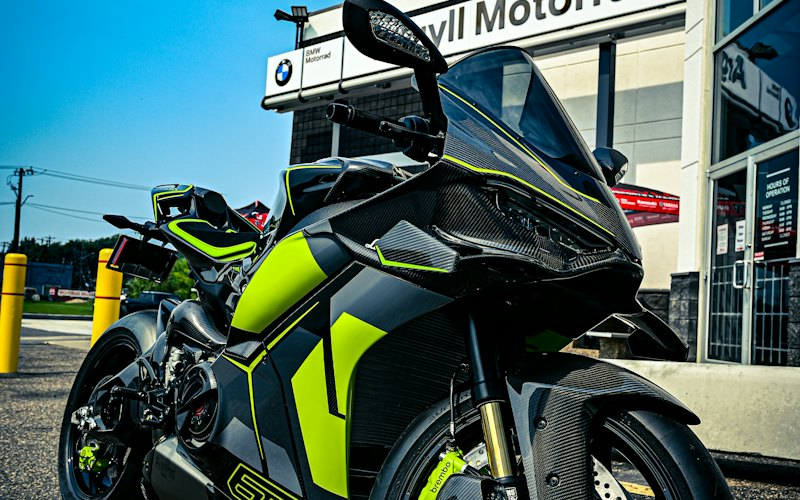
Esportiva elétrica chega às concessionárias com 200 km de autonomia
Com visual agressivo e aceleração de 0 a 100 km/h em menos de 4 segundos, o novo modelo esportivo mostra que desempenho e emissão zero podem andar juntos.
Ler maisPortal de notícias
Tudo sobre o mundo das motos elétricas: lançamentos, recarga, tecnologia e testes.

Com visual agressivo e aceleração de 0 a 100 km/h em menos de 4 segundos, o novo modelo esportivo mostra que desempenho e emissão zero podem andar juntos.
Ler mais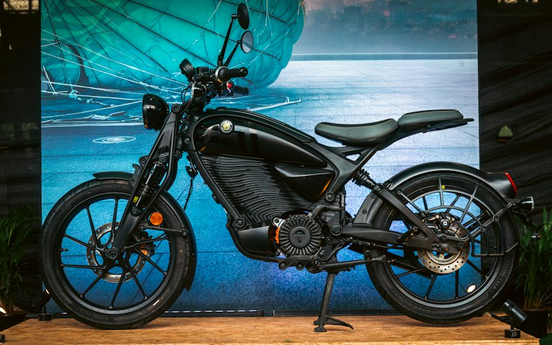
O modelo aposta em linhas retrô, banco de couro e painel digital minimalista. O motor elétrico entrega torque instantâneo desde a saída.
Ler mais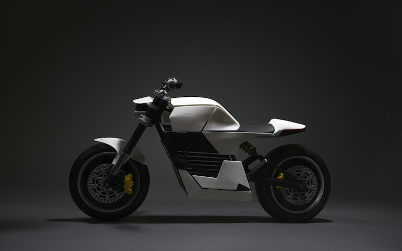
Apresentado em um salão de design, o protótipo tem quadro em alumínio, bateria integrada ao chassi e faróis em LED de traço fino.
Ler mais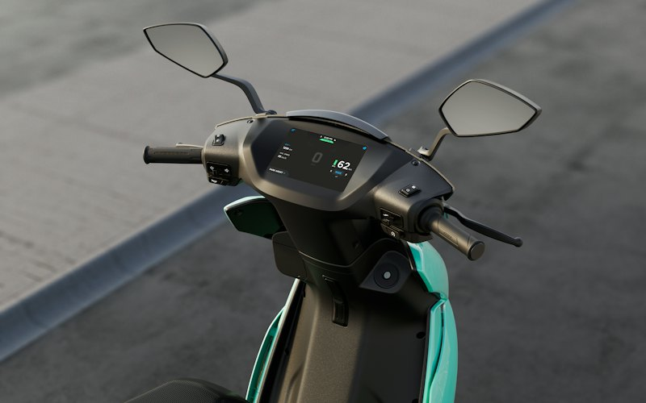
Fabricantes testam células com maior densidade de energia, que reduzem o peso da moto e aumentam a vida útil da bateria.
Ler mais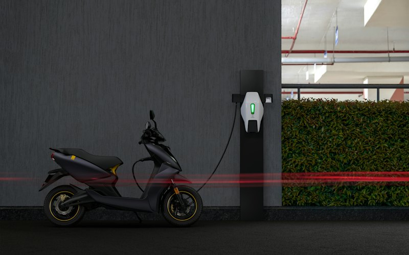
O sistema transforma a desaceleração em eletricidade e pode ampliar a autonomia em até 15% no trânsito urbano.
Ler mais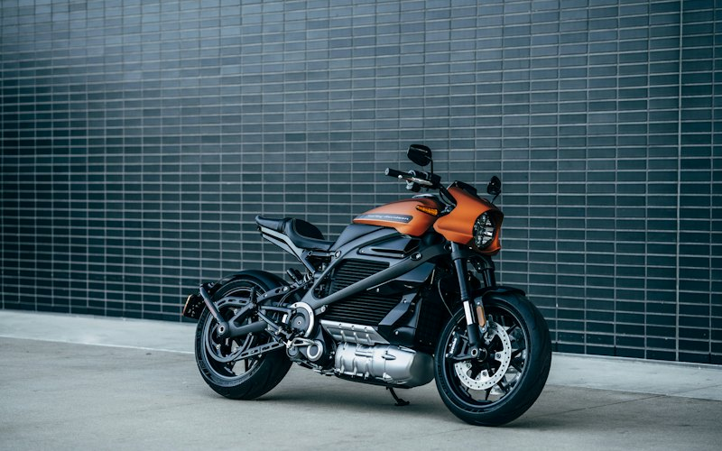
Pelo aplicativo, o motociclista acompanha o nível da bateria, planeja rotas e recebe alertas de manutenção.
Ler mais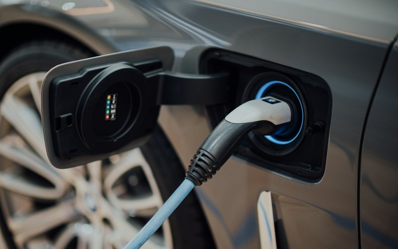
Shoppings, postos e estacionamentos instalam pontos de recarga, e uma parada de 30 minutos já devolve boa parte da carga.
Ler mais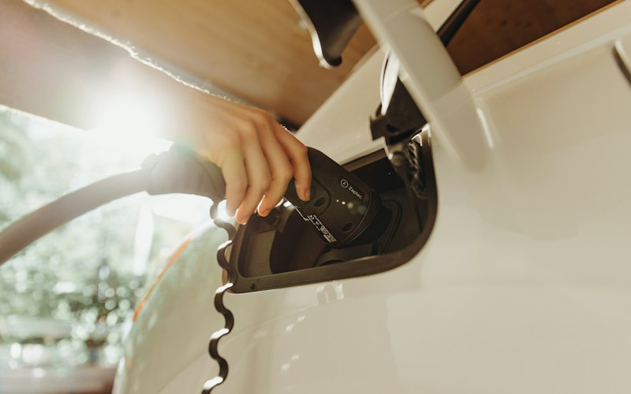
Em uma tomada comum, a recarga completa sai por poucos reais, bem menos que um tanque de gasolina para rodar a mesma distância.
Ler mais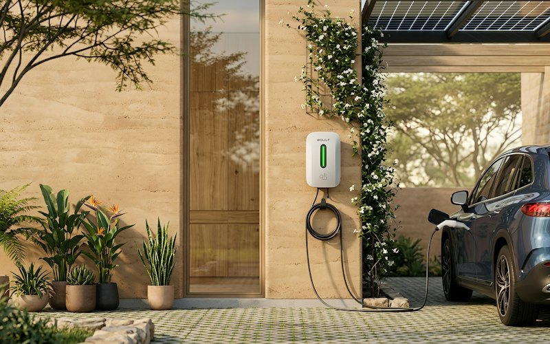
Quem tem painéis solares em casa consegue carregar a moto praticamente de graça, aproveitando a geração durante o dia.
Ler mais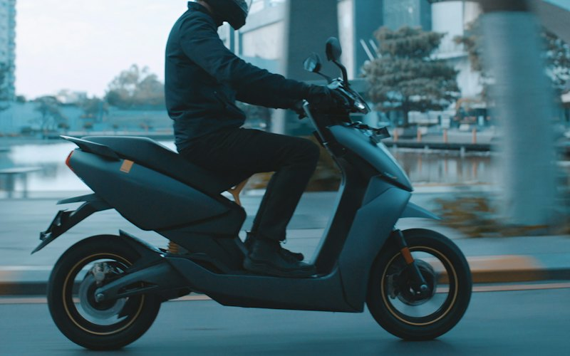
Leves e fáceis de estacionar, os modelos urbanos viram alternativa ao transporte público e ao carro nos centros das cidades.
Ler mais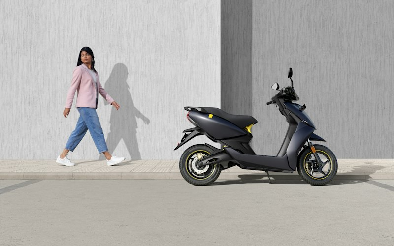
Com mais motos elétricas nas ruas, bairros movimentados registram redução no barulho, principalmente à noite.
Ler mais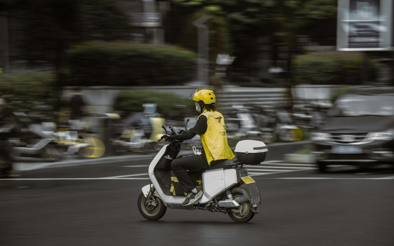
O custo menor por quilômetro e a manutenção simples atraem quem roda o dia todo fazendo entregas por aplicativo.
Ler mais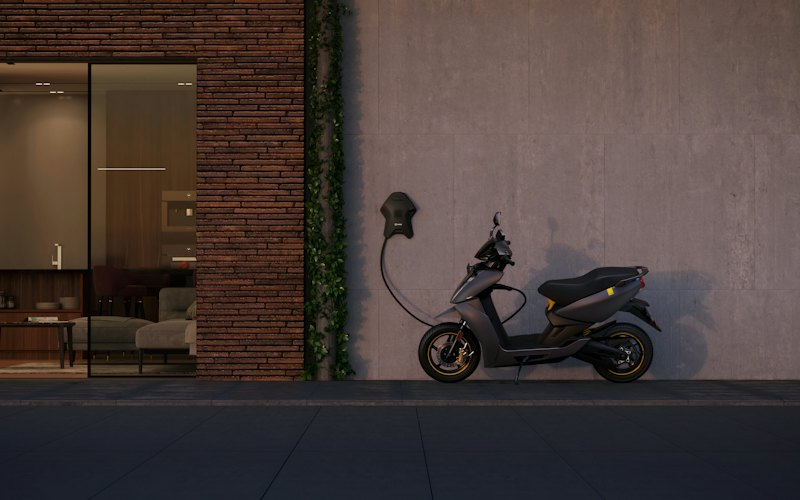
O segmento ainda é pequeno, mas cresce rápido com a chegada de modelos mais baratos e de linhas de financiamento específicas.
Ler mais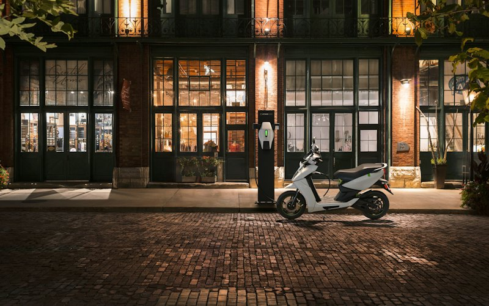
Empresas oferecem planos com seguro e manutenção inclusos, permitindo trocar de modelo sem a burocracia da venda.
Ler mais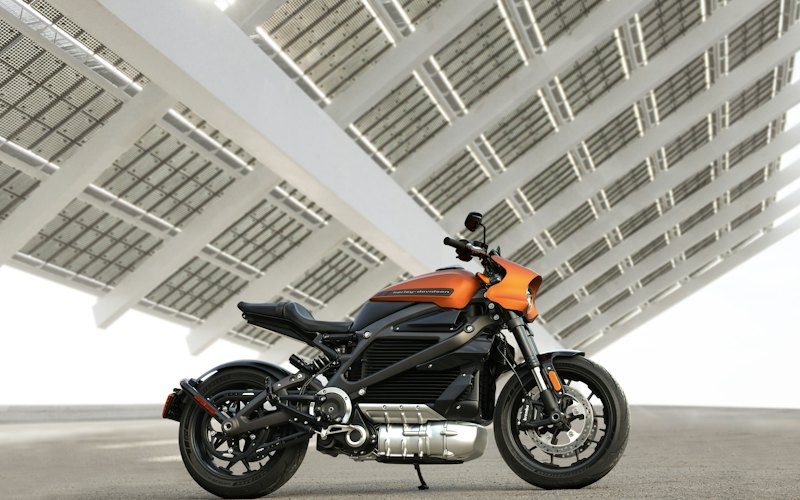
Isenção ou desconto no IPVA ajuda a diminuir a diferença de preço em relação às motos a combustão.
Ler maisNa cidade, a autonomia sobrou e o custo foi baixíssimo. Em viagens longas, o planejamento das paradas para recarga faz diferença.
Ler mais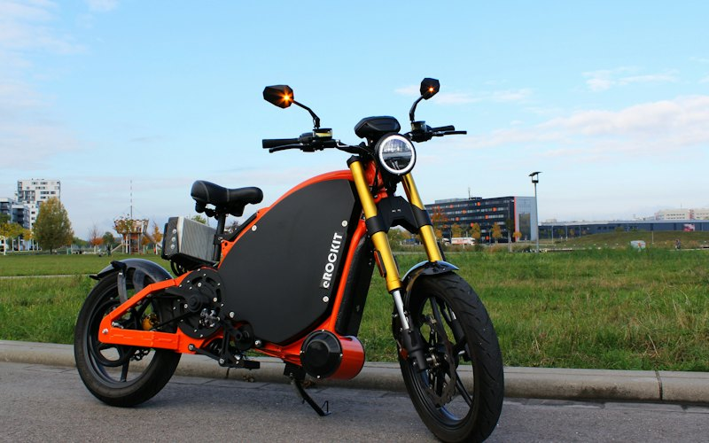
Boa estabilidade, aceleração forte e silêncio impressionante. O ponto de atenção é a autonomia em velocidade constante alta.
Ler mais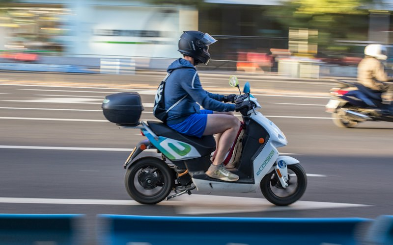
Ideal para trajetos curtos, o modelo agrada pela leveza e pela recarga em tomada comum, com a bateria removível.
Ler mais